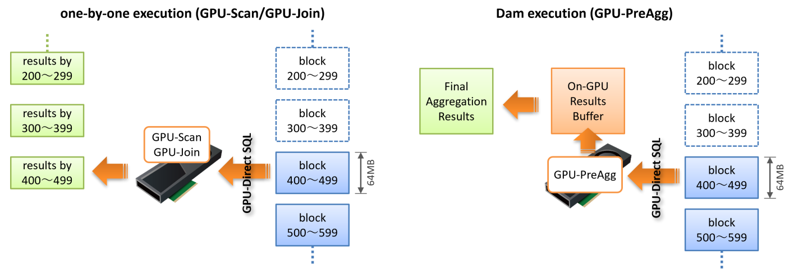

GPU-Sort
本章ではGPU-Sortおよび関連機能について説明します。
GPUタスクの実行方式
GPU-Sortを利用できる条件を説明するには、前提知識として、まずPG-StromがどのようにSQLワークロードを処理しているのかを知る必要があります。
PG-StromのワークロードのうちGPU-ScanおよびGPU-Joinは、処理の対象となるテーブルを読み出す際、おおよそ64MBのチャンクに区切ってストレージからGPUへデータを読み出し、GPUでWHERE句やJOIN条件を評価してその処理結果をCPUへ書き戻します。
この時、Scan/Join処理に用いたGPUメモリは解放され、次の64MBのチャンクを処理するために再利用されます。通常、ストレージからのデータの読み出しや、GPUでのScan/Join処理、CPUへの書き戻しは並行して多重に実行されますが、それでもGPUメモリを次々に開放して再利用するため、PG-Stromが利用するGPUメモリはそれほど多くなりません。

一方、GPU-PreAggの場合は異なります。ワークロードの性質上、GPU上に集計処理の結果を溜め込み（Dam execution）、最後にそれをまとめてCPUへ書き戻します。そのため、GPU-PreAggが実行完了した段階でGPUメモリ上にはほぼ全てのデータが載っている事になります。
ソートという処理の特性上、GPU-Sortを実行するには並び替えるデータが全てGPUにロードされていなければなりません。 つまり、集約演算を伴わないGPU-ScanやGPU-Joinのみを下位ノードとして持つGPU-Sortの場合は、GPU-PreAggのように実行結果をいったんGPUメモリ上に溜めこむ必要があります。これはGpuJoinにおけるInner Pinned Bufferで用いている実行方式と同一で、GPU-Scan/Joinの処理結果を次ステップで使用する場合、これをCPUに戻すのではなくGPUメモリ上に留置します。
GPU-Sortの有効化
ソート処理はその性質上、対象となるデータが全てGPUメモリに載っている必要があります。
したがって、ソートすべきデータがGPUメモリに留置する事のできる大きさである事が大前提ですが、もう一つ考慮すべき点が有ります。
PG-Stromにおける各種GPU処理は、演算子やSQL関数の処理をGPU上で完遂できない場合に、CPUでこれを再実行するCPU-Fallbackという機構を持っています。典型的には、可変長データがPostgreSQLのブロックサイズ(8kB)に収まらず外部のTOASTテーブルに格納されている場合です。 CPU-Fallbackは極めて例外的なデータに対しても処理の継続性を担保するための機能ですが、CPU-Fallbackの対象となった行はCPUで保持されるためGPUメモリ上には存在せず、よってソート処理を行う場合に障害となります。
そのため、GPU-Sort機能はCPU-Fallback機能が無効である時、つまりpg_strom.cpu_fallback=offである時にのみ作動します。

CPU-Fallbackが無効であれば、GPU-Scan/Join/PreAggの完全な処理結果がGPUメモリ上に存在する事が保証されていますので、PG-StromはBitonic-Sortingアルゴリズムに基づく並列ソートを実行し、ソート済みの結果をCPUに返す事ができます。
また、LIMIT句やrank() < 4のように行数を制限するWindow関数と共に使用された場合、これらの最適化ヒントに基づいてCPUに返却するデータ件数を削減します。これはCPUの処理すべきデータ件数を削減するという形で高速化に寄与するはずです。
以下の実行計画は、GPU-Sortを有効化しない状態でWindow関数（rank() < 4）による件数の絞り込みを行ったものです。
=# explain analyze
select * from (
select c_region, c_nation, c_city, lo_orderdate, sum(lo_revenue) lo_rev,
rank() over(partition by c_region, c_nation, c_city
order by sum(lo_revenue)) cnt
from lineorder, customer
where lo_custkey = c_custkey
and lo_shipmode in ('RAIL','SHIP')
group by c_region, c_nation, c_city, lo_orderdate
) subqry
where cnt < 4;
QUERY PLAN
--------------------------------------------------------------------------------------------------------------------------------------------------------------------
WindowAgg (cost=32013352.01..33893039.51 rows=75187500 width=84) (actual time=13158.987..13335.106 rows=750 loops=1)
Run Condition: (rank() OVER (?) < 4)
-> Sort (cost=32013352.01..32201320.76 rows=75187500 width=76) (actual time=13158.976..13238.136 rows=601500 loops=1)
Sort Key: customer.c_region, customer.c_nation, customer.c_city, (pgstrom.sum_numeric((pgstrom.psum(lineorder.lo_revenue))))
Sort Method: quicksort Memory: 76268kB
-> HashAggregate (cost=15987574.35..18836475.71 rows=75187500 width=76) (actual time=9990.801..10271.543 rows=601500 loops=1)
Group Key: customer.c_region, customer.c_nation, customer.c_city, lineorder.lo_orderdate
Planned Partitions: 8 Batches: 1 Memory Usage: 516113kB
-> Custom Scan (GpuPreAgg) on lineorder (cost=4967906.38..5907750.13 rows=75187500 width=76) (actual time=9175.476..9352.529 rows=1203000 loops=1)
GPU Projection: pgstrom.psum(lo_revenue), c_region, c_nation, c_city, lo_orderdate
GPU Scan Quals: (lo_shipmode = ANY ('{RAIL,SHIP}'::bpchar[])) [plan: 600046000 -> 171773200, exec: 1311339 -> 362780]
GPU Join Quals [1]: (lo_custkey = c_custkey) [plan: 171773200 -> 171773200, exec: 362780 -> 322560
GPU Outer Hash [1]: lo_custkey
GPU Inner Hash [1]: c_custkey
GPU Group Key: c_region, c_nation, c_city, lo_orderdate
Scan-Engine: GPU-Direct with 2 GPUs <0,1>; direct=11395910, ntuples=1311339
-> Seq Scan on customer (cost=0.00..81963.11 rows=3000011 width=46) (actual time=0.008..519.064 rows=3000000 loops=1)
Planning Time: 1.395 ms
Execution Time: 13494.808 ms
(19 rows)
GPU-PreAggの後、部分集計結果を集約するHashAggregate、そして集計値をソートするSortが実行され、最後に各c_region, c_nation, c_city毎にsum(lo_revenue)上位3件に絞り込むためのWindowAggが実行されています。
GPU-PreAggの処理時間は9.352秒ですので、概ね4秒ほどが後半のCPUで処理されていることが分かります。
一方、以下の実行計画はpg_strom.cpu_fallback=offを設定してCPU-Fallbackを無効化（つまりGPU-Sortを有効化）したものです。
=# set pg_strom.cpu_fallback = off;
SET
=# explain analyze
select * from (
select c_region, c_nation, c_city, lo_orderdate, sum(lo_revenue) lo_rev,
rank() over(partition by c_region, c_nation, c_city
order by sum(lo_revenue)) cnt
from lineorder, customer
where lo_custkey = c_custkey
and lo_shipmode in ('RAIL','SHIP')
group by c_region, c_nation, c_city, lo_orderdate
) subqry
where cnt < 4;
QUERY PLAN
--------------------------------------------------------------------------------------------------------------------------------------------------------
WindowAgg (cost=5595978.47..5602228.47 rows=125000 width=84) (actual time=9596.930..9598.194 rows=750 loops=1)
Run Condition: (rank() OVER (?) < 4)
-> Result (cost=5595978.47..5599415.97 rows=125000 width=76) (actual time=9596.918..9597.292 rows=750 loops=1)
-> Custom Scan (GpuPreAgg) on lineorder (cost=5595978.47..5597540.97 rows=125000 width=76) (actual time=9596.912..9597.061 rows=750 loops=1)
GPU Projection: pgstrom.psum(lo_revenue), c_region, c_nation, c_city, lo_orderdate
GPU Scan Quals: (lo_shipmode = ANY ('{RAIL,SHIP}'::bpchar[])) [plan: 600046000 -> 171773200, exec: 1311339 -> 362780]
GPU Join Quals [1]: (lo_custkey = c_custkey) [plan: 171773200 -> 171773200, exec: 362780 -> 322560
GPU Outer Hash [1]: lo_custkey
GPU Inner Hash [1]: c_custkey
GPU Group Key: c_region, c_nation, c_city, lo_orderdate
Scan-Engine: GPU-Direct with 2 GPUs <0,1>; direct=11395910, ntuples=1311339
GPU-Sort keys: c_region, c_nation, c_city, pgstrom.fsum_numeric((pgstrom.psum(lo_revenue)))
Window-Rank Filter: rank() over(PARTITION BY c_region, c_nation, c_city ORDER BY pgstrom.fsum_numeric((pgstrom.psum(lo_revenue)))) < 4
-> Seq Scan on customer (cost=0.00..81963.11 rows=3000011 width=46) (actual time=0.006..475.006 rows=3000000 loops=1)
Planning Time: 0.381 ms
Execution Time: 9710.616 ms
(16 rows)
元の実行計画に存在したHashAggregateおよびSortが無くなり、代わりにGpuPreAggのオプションとしてGPU-Sort keysやWindow-Rank Filterという行が出現しています。
これは、GpuPreAggが完全な集約をGPU上で作成し、更にそれをソートして出力する事を示しています。
さらにこのクエリの場合、Window関数であるrank()による絞り込みが行われています。この条件を下位ノードであるGpuPreAggにプッシュダウンする事で、予めフィルタされる事が分かっている行を結果セットから除去し、GPU->CPUへのデータ転送量と、CPUがコピーすべき行数を削減しています。これらの処理はGPUメモリ上で並列に処理されるため、一般的にはCPUが処理するより高速です。
GPU-Sortによる行数削減
GPU-Sortが発動するにはいくつかの条件が必要です。 前節で説明した通り、まずCPU-Fallbackが無効化されている事が大前提です。
オプティマイザがGPU-Sortを挿入するのは以下のような場合です。 - ORDER BY句などで、上位ノードがソート済み結果を要求している。 - Window関数が使用されており、上位ノードがソート済み結果を要求している。
これらのワークロードに対して、PG-StromはGPU-Sort付きのGPU-PreAgg/Join/Scanの実行計画を生成します。
加えて、以下のような場合には、GPU上でソート処理まで完結してしまう事によって、副次的にGPUからCPUに返却する行数を削減する事が可能です。
- ORDER BYにLIMIT句が付加されており、最大で何件の行を出力すればよいか事前に分かっている場合。
- Window関数rank()などを用いて、各パーティションの上位何件を出力すればよいか事前に分かっている場合。
以下の実行計画は、いくつかのテーブルを結合して集計演算を実施し、その結果をd_year、revenue順に並び替えた上で上位10件を出力するというものです。
=# set pg_strom.cpu_fallback = off;
SET
=# explain
select c_nation, s_nation, d_year, sum(lo_revenue) as revenue
from customer, lineorder, supplier, date1
where lo_custkey = c_custkey
and lo_suppkey = s_suppkey
and lo_orderdate = d_datekey
and c_region = 'ASIA' and s_region = 'ASIA'
and d_year >= 1992 and d_year <= 1997
group by c_nation, s_nation, d_year
order by d_year, revenue
limit 10;
QUERY PLAN
----------------------------------------------------------------------------------------------------------------------------------------------------------------
Gather (cost=19266896.24..19266897.46 rows=10 width=68) (actual time=44024.638..44056.484 rows=10 loops=1)
Workers Planned: 2
Workers Launched: 2
-> Result (cost=19265896.24..19265896.46 rows=10 width=68) (actual time=44016.179..44016.185 rows=3 loops=3)
-> Parallel Custom Scan (GpuPreAgg) on lineorder (cost=19265896.24..19265896.31 rows=10 width=68) (actual time=44016.177..44016.181 rows=3 loops=3)
GPU Projection: pgstrom.psum(lo_revenue), c_nation, s_nation, d_year
GPU Join Quals [1]: (s_suppkey = lo_suppkey) [plan: 2500011000 -> 494752100, exec: 0 -> 0
GPU Outer Hash [1]: lo_suppkey
GPU Inner Hash [1]: s_suppkey
GPU Join Quals [2]: (c_custkey = lo_custkey) [plan: 494752100 -> 97977410, exec: 0 -> 0
GPU Outer Hash [2]: lo_custkey
GPU Inner Hash [2]: c_custkey
GPU Join Quals [3]: (d_datekey = lo_orderdate) [plan: 97977410 -> 84024450, exec: 0 -> 0
GPU Outer Hash [3]: lo_orderdate
GPU Inner Hash [3]: d_datekey
GPU Group Key: c_nation, s_nation, d_year
Scan-Engine: GPU-Direct with 2 GPUs <0,1>; direct=114826068, ntuples=0
GPU-Sort keys: d_year, pgstrom.fsum_numeric((pgstrom.psum(lo_revenue)))
GPU-Sort Limit: 10
-> Parallel Custom Scan (GpuScan) on supplier (cost=100.00..78805.87 rows=824560 width=22) (actual time=16.090..104.527 rows=666540 loops=3)
GPU Projection: s_nation, s_suppkey
GPU Scan Quals: (s_region = 'ASIA'::bpchar) [plan: 9999718 -> 824560, exec: 10000000 -> 1999620]
Scan-Engine: GPU-Direct with 2 GPUs <0,1>; direct=168663, ntuples=10000000
-> Parallel Custom Scan (GpuScan) on customer (cost=100.00..79517.76 rows=2475728 width=22) (actual time=14.848..226.354 rows=2000770 loops=3)
GPU Projection: c_nation, c_custkey
GPU Scan Quals: (c_region = 'ASIA'::bpchar) [plan: 30003780 -> 2475728, exec: 30000000 -> 6002311]
Scan-Engine: GPU-Direct with 2 GPUs <0,1>; direct=519628, ntuples=30000000
-> Parallel Seq Scan on date1 (cost=0.00..69.55 rows=1289 width=8) (actual time=0.009..0.132 rows=731 loops=3)
Filter: ((d_year >= 1992) AND (d_year <= 1997))
Rows Removed by Filter: 121
Planning Time: 0.786 ms
Execution Time: 44093.114 ms
(32 rows)
GPU-Sortがない場合、GPU-PreAggは4375件の部分集計結果を生成し、それをHashAggregateで統合した後、Sortで並び替えてLimitで上位10件だけを出力するという流れになっています。 問題のスケールによっては、PostgreSQLの並列ワーカー毎に部分ソート結果を生成し、それをマージソートするという戦略が採られる事があるかもしれません。いずれにせよ、件数の増加に伴ってCPU負荷の大きなソート処理は厄介な問題となってきます。
しかし、ソート結果の上位10件だけが出力されるという事が予め分かっていれば、4365件のデータはそもそもCPUに返す必要のないものです。
このクエリ実行計画には、CPUでのSortもHashAggregateも含まれていません。
代わりに、GPU-PreAggの後処理としてGPU-Sort keys行に表示されているキー値を元に処理結果を並び替えるほか、GPU-Sort Limit行に表示された10行だけを返します。そしてCPU側でSortやLimitを挟むことなく、GPUの処理結果を即座にクライアントに返却するだけという実行計画となっているのです。
LIMIT句のほかに行数を削減するヒントとして利用できるのはWindow関数ですが、現状、以下のような条件式をヒントとして利用する事ができます。
rank() OVER(...) < CONSTrank() OVER(...) <= CONSTdense_rank() OVER(...) < CONSTdense_rank() OVER(...) <= CONSTrow_number() OVER(...) < CONSTrow_number() OVER(...) <= CONST
なお、CPU-Fallbackは無効にしたいが、GPU-Sortは使いたくはないという場合は、pg_strom.enable_gpusort = [on|off]でGPU-Sortの機能だけを有効化/無効化する事も可能です。